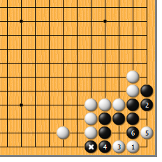
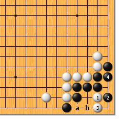
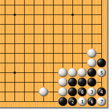
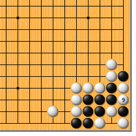
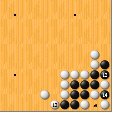
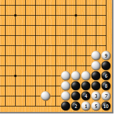
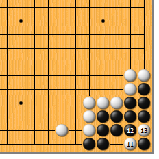

|  |  | |
| 图1 此型黑相当结实。白1点是急所，然而由于黑*子先扳了一手，白无法渡回，黑可于2位冷静地粘。白3、5都是急所，黑6挤，最终成双活。这是白方的最佳结果。
| 图2 白1靠怎么样？黑2扳好，白3立时，黑4粘，白无法a位渡，如此黑活。白1如a位扑，黑b位提，仍是活棋。 | |
|  |
 | |
| 图3 白1点是厉害的一手，千万小心！黑2必粘，白3尖，黑4要扳，白5扑时，黑怎么办？黑6扑妙手！白7提则黑8打，以后…… | 图4 白9只好提（粘不上啊），黑10于9位下一路提，白11再于9位反提……（头晕了吧？呵呵）
| |
|  |  | |
图5 黑12粘，白13紧气，黑14提，结果是什么呢？——循环劫！将来白提黑14子时，黑于a位提，此劫白永远打不赢。（不过白也有了用不完的劫材哦，塞翁失马……） | 图6 白1、3后，黑4打是大俗手。白5粘，黑6不得不粘，白7做眼，黑8紧气。白虽不能眼杀或聚杀，但白9紧气，黑10提了一个曲四……
| |
|  | 您的高见 | |
图7 白居然可以在11位打吃！？黑12不得已，白13提成劫。围棋真是博大精深啊！（站长大悟……） |